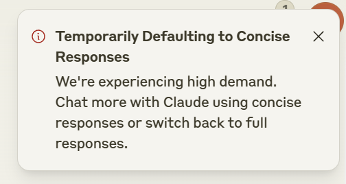

日常记录/2405-2506
日常
-
241201 最近一些让人开心的小事：
昨天跟二老聊天，母上退了休就去隔壁大娘菜园子遛弯薅菜，父上周末开车出去周边转转，也挺符合我对他们的期待，多出去看看多吃点健康的东西，挺好； 妹子很喜欢我做的好吃的，然后俩人一起变胖，我做饭确实是有天赋的哦； 账户收益年化10%，很满意； chatgpt和claude的IP管控明显放宽了，丝滑用地球上最先进的生产力的感觉真好。 好像又好起来了。 -
241209 每天晚上回到家用claude都会这样，考虑到国区晚上是美区白天，看来大家都喜欢上班偷懒。

- 241209 用了快一年磁轴了，只能说，别用。
- 241211 今天深圳悦府爆炸这个事儿，我第一时间想到的是“最初，没有人在意这场灾难，这不过是一场山火，一次旱灾，一个物种的灭绝，一座城市的消失”。超高层豪宅要被打回原形了，疯狂推高地价堆容积率下场就是这样。
- 250614 今天去看了周传雄演唱会，感觉周传雄可能是我目前去过的演唱会里面体验最好的了：
- 内场1000档次其实已经可以坐很靠前了。这个价格如果是一线大牌明星可能只能坐到内场边边
- 他真的好温柔！
想法
-
离开游戏行业好久了，回头来想想自己确实不适合那个行业。
游戏行业是非常吃老带新的，有些骚东西你没见老师傅做过自己想确实不容易。
据我观察做游戏开发如鱼得水的一般有两种人：名校金牌大学霸，管你什么问题最后都是数学/物理问题，一路靠基本功纸笔平A过去；一类是有名气的项目组里出来的老师傅，天上飞的水里游的nai子怎么摇的都见过了，自己的技术方案已经被市场验证过了，换个项目拿来就能做，反正食色性也千百年过去了大家爱看的不就是那些嘛。
游戏行业又是极度封闭的，别看每年GDC各个厂商吹得花里胡哨，真的能用的方案人家是不会拿过来讲的，你没做过你就是不知道。
不是这两类人真的劝退。
-
我发现我好像真的是一个极度风险厌恶的人。炒股每天想的是什么情况下会爆仓，自己仓位的风险敞口在哪，怎么做保护不一把亏光；工作每天想的是失业了怎么办，后路在哪里，被裁了怎么在半个月内找到新工作；连高速上开车的时候想的都是前面的司机喝高了出事了走哪条车道我能躲一下；喜欢没事读一读能让我更好理解非线性的东西，比如塔勒布的著作，比如一些期权卖方策略，看看别人怎么对冲不同的风险敞口。不要爆掉，少犯错误，已经很棒了
看的
谁动了我的奶酪
llmbook
涛动周期论
太白金星有点烦
重组与突破
特朗普传
检索力：打破信息差的科学方法
地火
反事实：可能与不可能的科学
健身路线图
失去的三十年：平成日本经济史
金字塔原理
身体由我：关于了不起的女性身体的一切